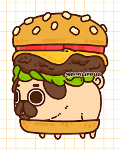

Welcome to the Laboratory Data Collection Interface
This project demonstrates the use of HTML forms, multi-page navigation, and consistent CSS styling.

This project demonstrates the use of HTML forms, multi-page navigation, and consistent CSS styling.